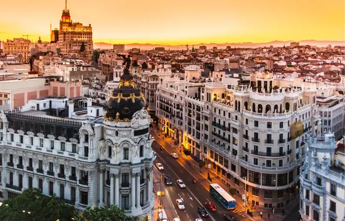

BATTAGLIA DI MADRID
(Novembre 1936 - Marzo 1939)
- Luogo: Madrid
- Evento: Primo grande assalto nazionalista alla capitale
- Descrizione: La Battaglia di Madrid rappresentò uno dei momenti più intensi e cruciali della Guerra Civile Spagnola. Dal novembre 1936 al marzo 1939, le forze nazionaliste, guidate da Francisco Franco, lanciarono una serie di attacchi contro la capitale spagnola, considerata un simbolo della resistenza repubblicana. Gli scontri iniziarono con un massiccio bombardamento e avanzarono rapidamente verso i sobborghi della città. Nonostante la superiorità militare iniziale dei nazionalisti, la popolazione di Madrid, sostenuta dalle milizie popolari e dalle Brigate Internazionali, oppose una strenua resistenza. I cittadini organizzarono barricate, scavarono trincee e parteciparono attivamente ai combattimenti. La propaganda repubblicana mobilitò la popolazione con lo slogan "¡No pasarán!" ("Non passeranno!"), che divenne il grido di battaglia dei difensori. Durante la battaglia, i repubblicani ricevettero supporto dall'Unione Sovietica, che fornì armi e consiglieri militari, mentre i nazionalisti furono sostenuti da Germania e Italia. La battaglia terminò con un impasse: Madrid rimase sotto il controllo repubblicano, ma le linee del fronte si stabilizzarono, trasformando il conflitto in una guerra di logoramento.
- Data inizio: Novembre 1936
- Data fine: Marzo 1939
- Morti: Sconosciuto con certezza, si presume la maggioranza delle vittime totali della guerra
- Feriti: Sconosciuto con certezza
- Forze in campo:
Nazionalisti: Truppe franchiste, supportate da aviazione Tedesca e Italiana.
Repubblicani: Esercito regolare, milizie popolari, Brigate internazionali.
- Personaggi chiave: Francisco Franco, josé Miaja
- Conseguenze:
Madrid rimase sotto controllo repubblicano.
Intensificazione del conflitto e aumento del coinvolgimento internazionale.
Distruzione diffusa nella citta’
- Com'è la città oggi:
Oggi Madrid è una capitale moderna e vivace, ricostruita dopo la guerra. Conserva monumenti storici come il Palazzo Reale e il Prado, mentre quartieri come la Gran Vía sono centri culturali e commerciali. La città è un mix di storia e innovazione, con un’economia fiorente e una forte identità spagnola.

